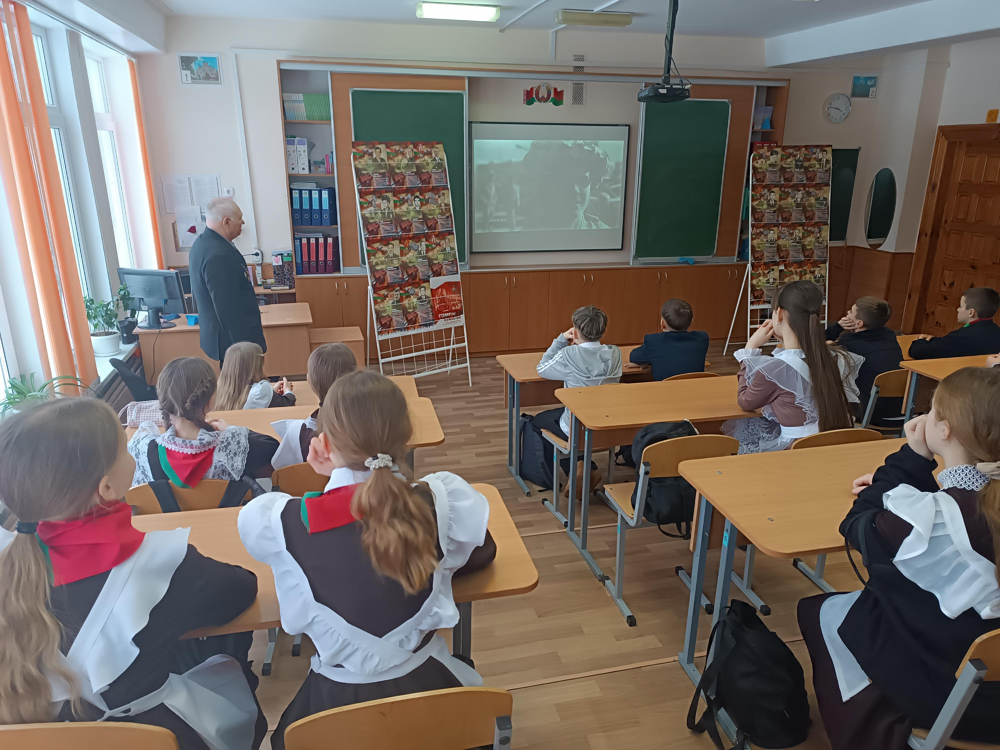
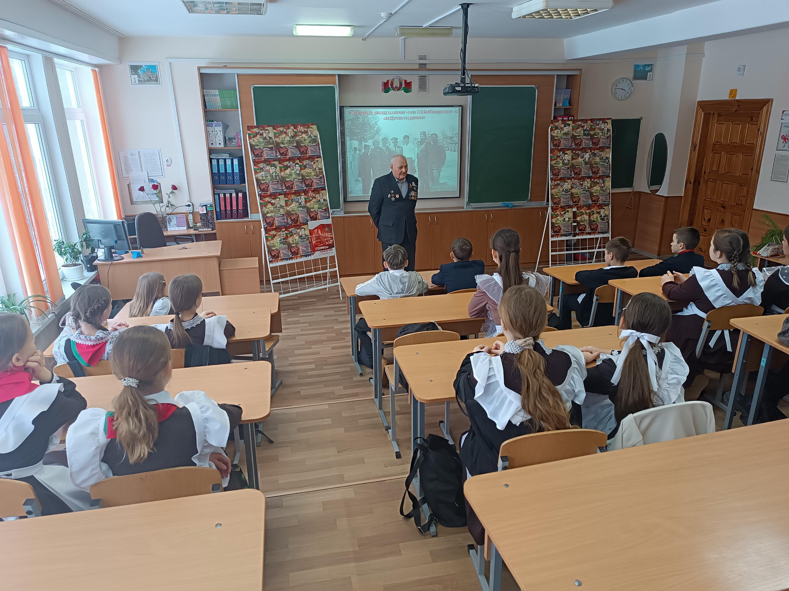
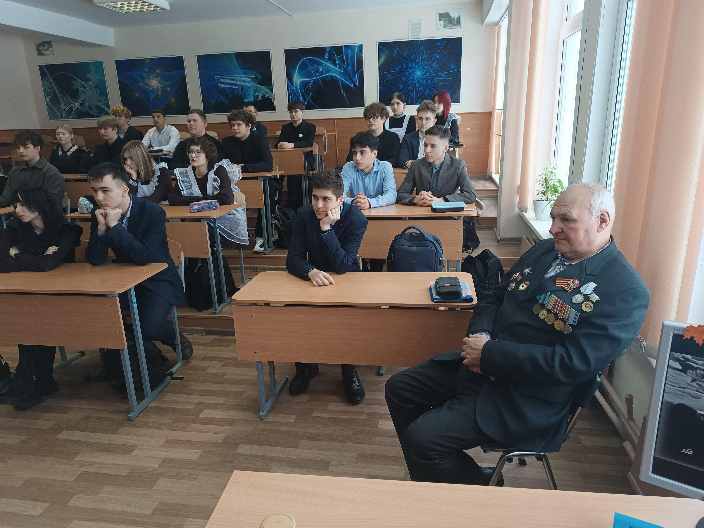
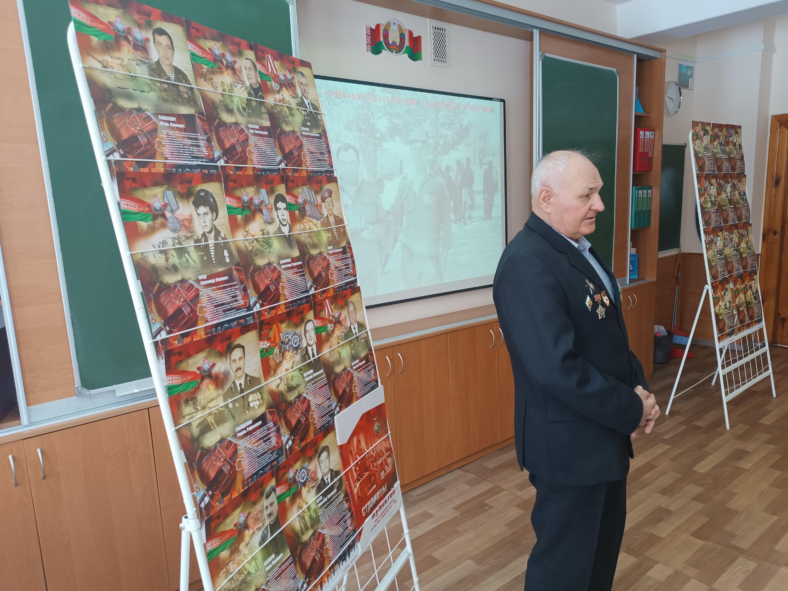
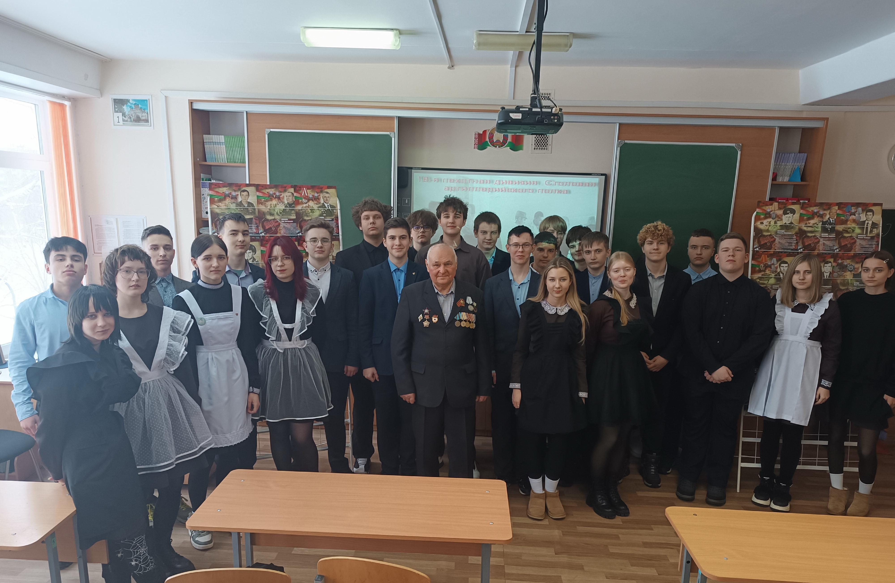
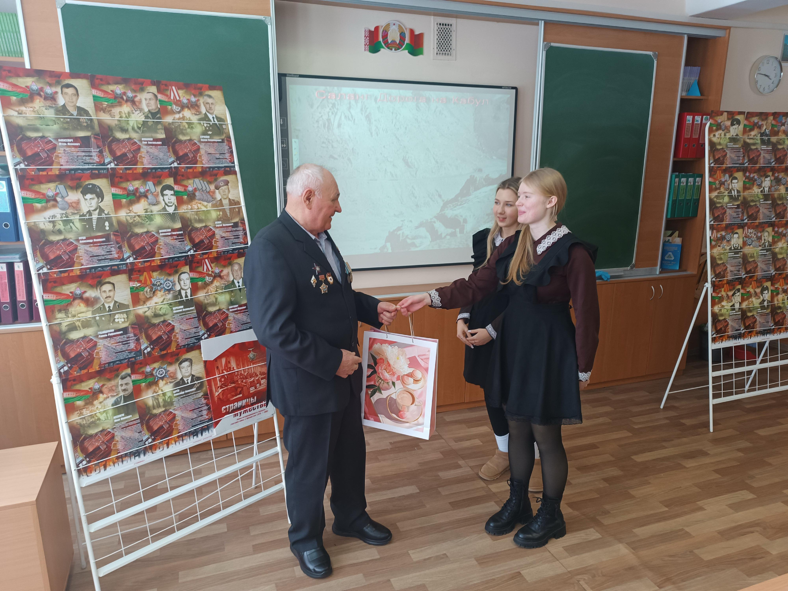

АФГАНИСТАН: ДОРОГАМИ МУЖЕСТВА
11 февраля, в преддверии Дня памяти воинов интернационалистов, с учащимися 6 «А» и 10 «А» классов Государственного учреждения образования «Гимназия №1 г. Борисова» прошли Уроки Памяти с участием воина-интернационалиста подполковника в отставке Николая Фомича Плехова.
Это не первая встреча ветерана с гимназистами. Николай Фомич с охотой встречается с ребятами и передает им свой жизненный опыт. К слову отметить, учащиеся гимназии отвечают воину-интернационалисту взаимностью. Изучив биографию подполковника Плехова, ребята создали презентацию и видеоролик, которые размещены на сайте Республиканского центра экологии и краеведения в разделе «Книга памяти воинов-интернационалистов.
В ходе уроков Николай Фомич рассказал ребятам о причинах ввода ограниченного контингента советских войск на территорию Афганистана, национальных и религиозных особенностях местных жителей, географических особенностях страны, задачах, стоящих перед военнослужащими.


Не оставил в своем рассказе без внимания ветеран и боевую учебу военнослужащих, их быт, питание и снабжение.
Под большим впечатление слушали ребята о боевых задачах, которые приходилось выполнять советским воинам, их подвигах и проявленной самоотверженности.


В заключении ветеран обратил внимание на подготовку юношей к службе в армии, занятия спортом и вред негативных привычек.

Ребята поблагодарили воина-интернационалиста за эмоциональный и познавательный рассказ.
